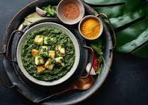

Palak Paneer
A delicious North Indian dish made with spinach and paneer.
Ingredients:
- 250g paneer (cubed)
- 2 cups fresh spinach (palak)
- 1 large onion (chopped)
- 2 tomatoes (pureed)
- 1 tbsp ginger-garlic paste
- 1 green chili (chopped)
- 1/2 tsp cumin seeds
- 1/2 tsp turmeric powder
- 1 tsp coriander powder
- 1/2 tsp garam masala
- 1/2 cup fresh cream (optional)
- 2 tbsp oil or butter
- Salt to taste
Instructions:
- Boil spinach leaves for 2-3 minutes, then blend into a smooth paste.
- Heat oil in a pan, add cumin seeds and onions, and sauté until golden brown.
- Add ginger-garlic paste and green chili, then cook for 1 minute.
- Add tomato puree, turmeric, and coriander powder, then cook until oil separates.
- Mix in spinach puree and cook for 3-4 minutes.
- Add paneer cubes and garam masala, then mix well.
- Optionally, add fresh cream for a richer taste.
- Serve hot with naan or rice.
Back to Recipes